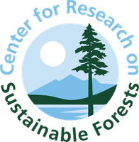
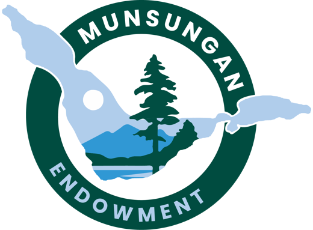
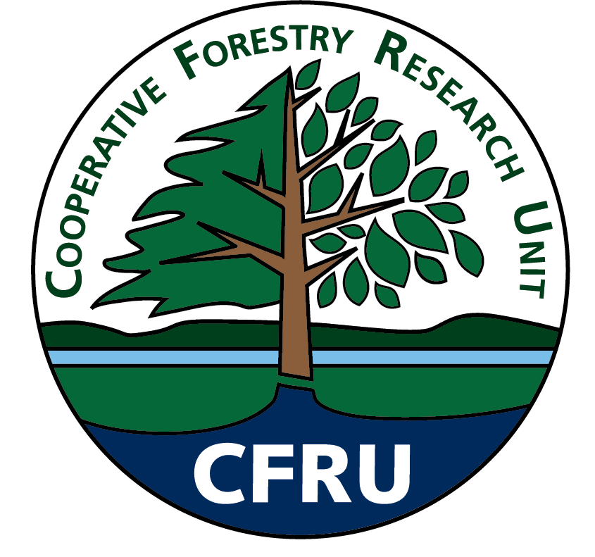
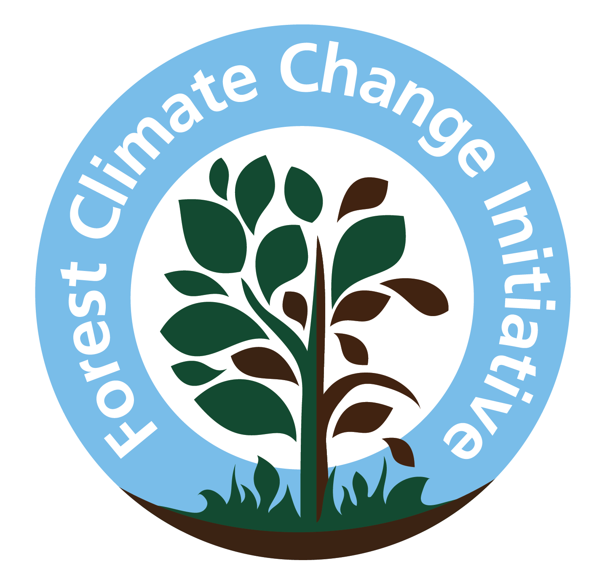
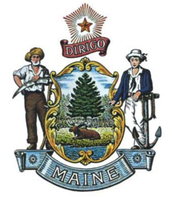

Related CRSF resources
This dashboard is one product of the Center for Research on Sustainable Forests. Explore the wider network of Maine and Northeast forest science.

CRSF
Center for Research on Sustainable Forests — the home center at UMaine.
Visit →PERSEUS
Multi-model forest projections — the modeled companion to this observational dashboard.
Explore →
Munsungan Symposium
The annual gathering where the State of Maine's Forests is released.
Learn more →
CFRU
Cooperative Forestry Research Unit — industry-university research partnership.
Visit →NEFIS
Northeast Forest Information Source — regional forest data and tools.
Visit →
FCCI
Forest Climate Change Initiative — adaptation and mitigation research.
Visit →
NSRC
Northeastern States Research Cooperative — cross-state forest science.
Visit →
Maine Climate Council STS
The Scientific & Technical Subcommittee behind the forest indicators.
Visit →